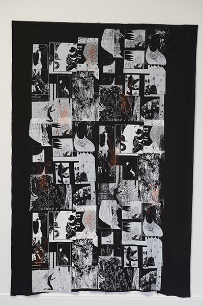

Modern History vol. 1 is an exhibition that brings together the work of artists from the North West, guest curated by Lynda Morris.
Artists: David Alker, Pavel Büchler, Clara Casian, Alan Dunn, The Exhibition Centre for the Life and Use of Books (Rob Carter, Dan Fogarty, Lauren Velvick), Mishka Henner, David Jacques, Tabitha Jussa, Rosalind Nashashibi and Lucy Skaer, Joe Fletcher Orr, David Osbaldeston, Susan Walsh, Gary Wiggins and Jen Wu
Modern History Vol. 1 will spotlight the work of artists based in the North West, and looks at how their art displays a sense of history, either by reflecting on historical change, particularly since the 1960s, or by looking at the global historical moment we are in. Works and items on display will explore strands as diverse as cinema, global communications and surveillance, warfare, football matches and leisure, and histories of cultural production such as Sci-fi and countercultural publishing in Manchester in the 1960s and 70s.
This is the first of a series of three exhibitions of North West based artists taking place across the region in 2015. Initiated by the Contemporary Visual Arts Network North West (CVAN NW), the exhibitions at Grundy Art Gallery, Blackpool, Bury Art Museum & Sculpture Centre and The Atkinson, Southport form a core part of a programme of professional development for artists based in the North West which aims to give increased exposure both inside and outside the region.
The exhibitions will be accompanied by a series of artist / curator talks, tours and open studios.
It is curated by Lynda Morris, who founded and curated the highly regarded international open EASTinternational in Norwich from 1991 to 2009, and more recently the Picasso exhibition at Tate Liverpool in 2010.
Lynda Morris said: “I know from curating EASTinternational that the North West has some of the best artists working in Europe today. It is still possible to be an artist who is a moral force in modern history, if you make work about the life of the people in Manchester, Liverpool, Preston, Birkenhead or Cumbria.”
DOWNLOAD CATTALOUGE TEXTS HERE
PippaPippa
The Time is Out of Joint
PM
